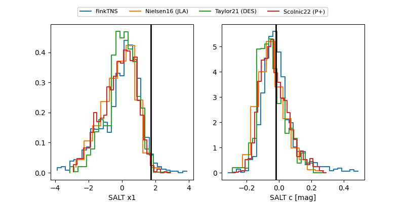

FINK: ZTF25abrdoqp
Lasair: ZTF25abrdoqp
ALeRCE: ZTF25abrdoqp
TNS: 2025xcj
YSE: 2025xcj
2025xcj (yse,tns)
PS25hip (panstarrs)
ZTF25abrdoqp (ztf,fink)
equatorial (ra, dec) = (255.8634,+55.66302)
galactic (l, b) = (83.8181,+37.18546)

last ps1::g=20.29, ps1::i=20.50, ps1::r=20.69, ztfr=20.15
2 ps1::g, 2 ps1::i, 1 ps1::r, 1 ztfr detections